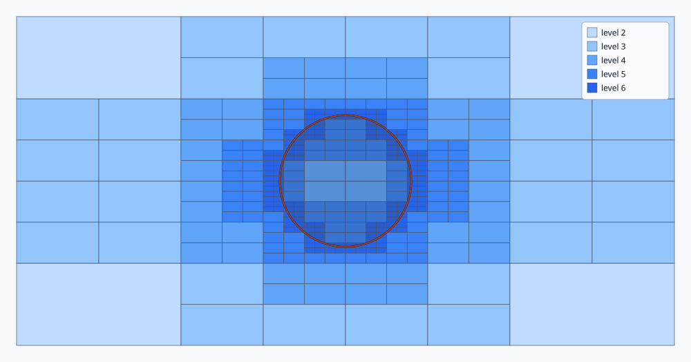
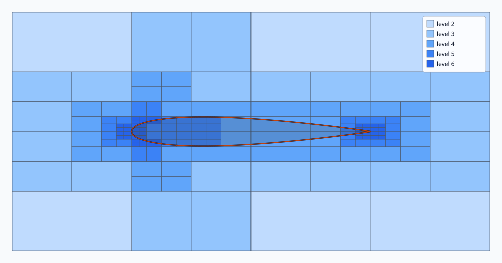
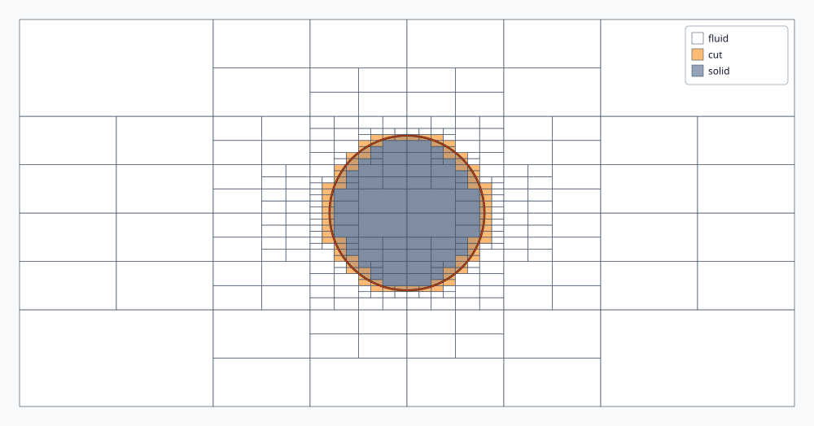
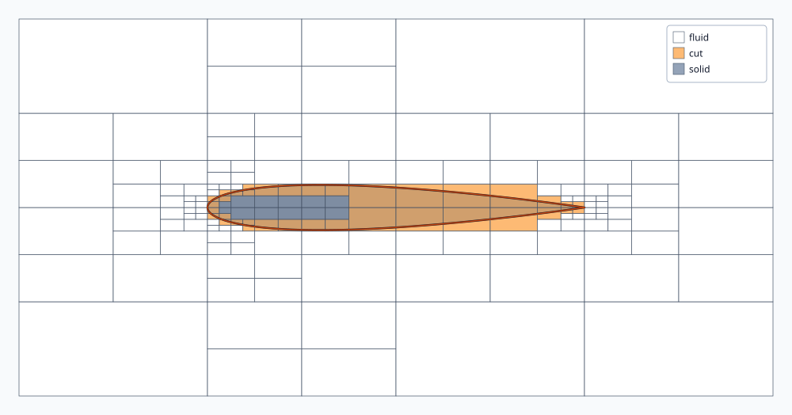
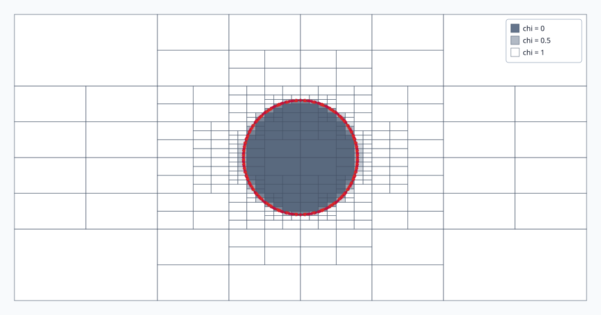
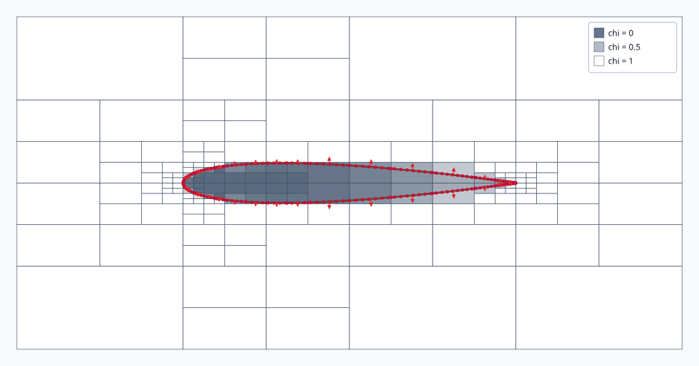

Circle — refinement levels
Darker blue means a deeper quadtree level.

These images use the same quadtree and clipped geometry data through three diagnostic views. They do not contain a CFD solution.
Darker blue means a deeper quadtree level.

Leading- and trailing-edge features drive the finest local cells.

White is fluid, orange is cut, and grey is solid.

The thin body exposes how the obstacle cuts Cartesian leaves.

Fill is fluid fraction chi; magenta points are clipped
intersections and red arrows are outward normals.

The overlays expose the boundary data that a later cut-cell solver will consume.
